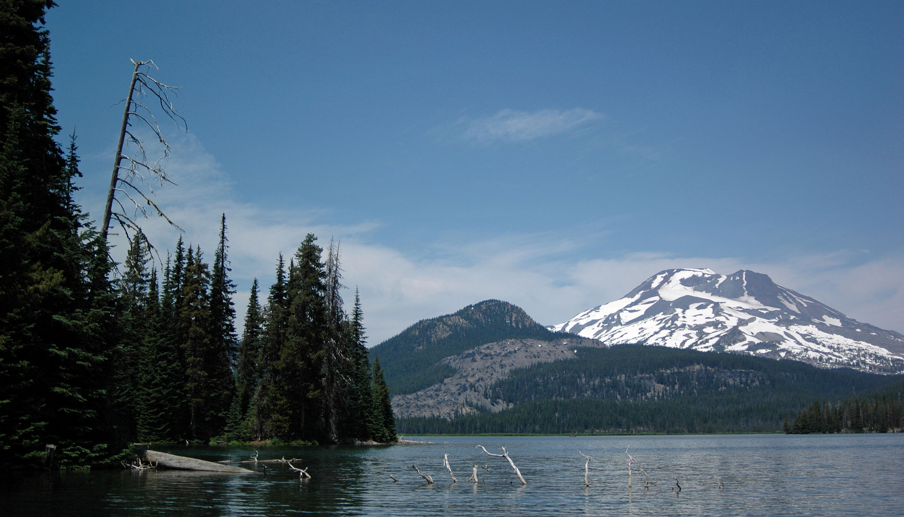

Sisters, Oregon
Charming mountain town at the edge of the Cascades

Key Stats
Overview
Sisters is a tiny town of roughly 3,000 people at the foot of the Three Sisters volcanic peaks in Central Oregon. With its Old West storefronts, art galleries, and annual outdoor quilt show, it draws tourists and retirees seeking mountain-town charm and access to some of the best outdoor recreation in the Pacific Northwest.
The town sits about 20 minutes northwest of Bend along Highway 20, functioning as a quieter, more rural alternative to that larger city. While it offers stunning natural beauty and low crime, Sisters has significant limitations for a young family: no classical Christian school in town (nearest options are 25 min away in Bend: Immanuel Classical School and Chesterton Academy), no Reformed churches in town, a very high cost of living relative to its size, limited services, and a demographic profile that skews heavily toward older residents. The median age of 49.6 is the highest of any city in this comparison.
Sisters ranks last among all nine cities evaluated. Its extraordinary natural setting and equestrian access cannot overcome the absence of the educational and faith infrastructure this family requires. For a family prioritizing Reformed church community and classical Christian education, Sisters would demand significant compromises in the two highest-weighted categories.
Scores
Rated 1-10 across six weighted categories. Weighted overall: 3.6 / 10 (Rank #9 of 9).
| Category | Score | Rank (of 9) | Assessment |
|---|---|---|---|
| Faith | 1 | #8 | No Reformed churches in Sisters. Nearest options are small congregations 25-30 min away in Bend. |
| Education | 3 | #8 | No classical school in Sisters. Nearest options in Bend (25 min): Immanuel Classical School (Reformed, K-12) and Chesterton Academy (Catholic, 9-12). |
| Lifestyle | 9 | #1 | World-class outdoor recreation, low crime, stunning Cascade scenery. |
| Housing | 2 | #7 | $775K median, Oregon land use law restricts subdivisions, limited inventory. |
| Cost of Living | 3 | #7 | 131 index, very expensive for a small town. No sales tax but high state income tax. |
| Community | 4 | #7 | Charming small-town feel but median age 49.6, tourist economy, not family-dominant. |
Cost of Living
Overall index 131 (vs 90.8 baseline). Very expensive for a small town.
| Metric | Sisters, OR | Lexington, KY (Baseline) |
|---|---|---|
| Overall Index | 131 | 90.8 |
| Housing Index | 201 | 76 |
| Grocery Index | 106 | 100 |
| Utilities Index | 93 | 86 |
| Transportation Index | 112 | 96 |
| Median Household Income | $94,524 | $75,818 |
| Property Tax (on $400K) | $2,600 | $3,480 |
| Unemployment Rate | 4.8% | 3.8% |
Oregon has no sales tax, which is a meaningful advantage for everyday spending. However, the state income tax is among the highest in the nation at 4.75%-9.9%, and the overall cost of living at 131 makes Sisters one of the most expensive small towns under consideration. The housing index of 201 is particularly striking -- more than double the national average and nearly triple the Lexington baseline. The remote-friendly economy is rated "High," which reflects the town's appeal to remote workers, but also contributes to the inflated housing costs.
Housing & Land
$775K median home price. Oregon land use law restricts rural subdivisions.
| Neighborhood | Price Range | Family Rating | Notes |
|---|---|---|---|
| Tollgate | $500K-$800K | Good | Family-friendly, pool, tennis, 2mi from town |
| Cascade Meadow Ranch | $800K-$1.5M+ | Good | Premier equestrian community, small lots |
| Tumalo Area | $500K-$1.5M+ | Good | Best for 10+ acre horse/ranch property |
| In-town Sisters | $500K-$900K | Moderate | Walkable to schools and shops |
Ranch land runs $8K-$48K per acre in the Tumalo area, which is the best option for horse property with 10+ acres. Oregon's strict land use laws (the Urban Growth Boundary system) significantly restrict subdivisions and rural development, keeping land availability limited and prices elevated. The horse-friendly zoning is a plus, and the market with 53 days on market is moving faster, and the entry price remains very high. Cascade Meadow Ranch is the premier equestrian community but starts at $800K with relatively small lots.
Education
No classical school in Sisters. Nearest options in Bend (25 min). Score: 3/10.
Classical Christian Schools
None in Sisters. Sisters Christian Academy closed in 2020 and has not been replaced. The nearest classical options are in Bend (25 min): Immanuel Classical School (K-12, classical Christian rooted in Reformed theology, covenantal discipleship model -- immanuelclassical.school) and Chesterton Academy of Mater Dei (Catholic classical high school, grades 9-12, $2,400 tuition, opened Fall 2025 with 8 students). Having a Reformed classical school within 25 minutes is a meaningful improvement, though the commute remains a factor.
Other Private Schools (Nearest Options)
| School | Grades | Tuition | Notes |
|---|---|---|---|
| Morning Star Christian School (Bend) | PK-8 | $7,950 | 25 min from Sisters, Christ-centered STEM |
| Three Sisters Adventist School (Bend) | PK-8 | -- | 20 min from Sisters, since 1924 |
Homeschool Co-ops
| Co-op | Type | Notes |
|---|---|---|
| Cascade Christian Co-op | Christian | Central Oregon, supplementary classes |
| Commonplace Sisters | Enrichment | Art, music, drama classes in Sisters |
The public schools rate reasonably well at A- with a 92% graduation rate. In Bend (25 min), there are now two classical options: Immanuel Classical School (K-12, Reformed) and Chesterton Academy of Mater Dei (Catholic classical high school, 8 students). The nearest private Christian options in Bend also include Morning Star Christian School (PK-8, Christ-centered STEM). There is no Classical Conversations community in Sisters. Homeschooling with the local co-ops would be the most viable path, but the support infrastructure is thin compared to cities like Lexington, Chattanooga, or Greenville.
Faith
Key weakness: No Reformed churches in Sisters. Nearest are 25-30 min in Bend.
Nearest Reformed Options (All in Bend, 25-30 min)
| Church | Denomination | Size | Notes |
|---|---|---|---|
| Grace Reformed Presbyterian | OPC | Small | 25-30 min drive from Sisters |
| Sovereign Grace Church | Reformed Baptist | Small | 25-30 min drive |
There are zero PCA, OPC, EPC, or CREC churches in Sisters. The Reformed density is rated "Very Weak" -- the lowest of any city in this comparison. The nearest Reformed congregations are small churches in Bend, each requiring a 25-30 minute drive. For a family that prioritizes weekly participation in a vibrant Reformed church community, this isolation is a serious obstacle. Midweek fellowship, youth group, and spontaneous community life with church members would all be hampered by the distance.
Christian Organizations
- CORE Market food pantry
- OCEANetwork (Oregon Christian Education Association)
Lifestyle
Primary strength: Stunning natural beauty, world-class outdoor recreation, low crime.
Climate
| Season | High | Low |
|---|---|---|
| Spring | 58F | 29F |
| Summer | 82F | 41F |
| Fall | 61F | 30F |
| Winter | 41F | 21F |
Outdoor Recreation
| Activity | Quality (1-5) | Notes |
|---|---|---|
| Hiking | 5 | Peterson Ridge trails, South Sister, Three Sisters Wilderness, PCT |
| Skiing | 5 | Hoodoo 22mi, Mt. Bachelor 50-60 min |
| Equestrian | 5 | Cascade Meadow Ranch, Deschutes NF trails, Sisters Rodeo |
| Fishing | 5 | Metolius River world-class fly fishing |
| Mountain Biking | 4 | Peterson Ridge, McKenzie Pass |
Lifestyle is where Sisters truly excels. Every outdoor recreation category scores 4 or 5 out of 5. The Three Sisters Wilderness, Metolius River, Hoodoo and Mt. Bachelor skiing, and extensive Deschutes National Forest trail systems offer year-round world-class access. The equestrian scene is excellent, anchored by Cascade Meadow Ranch and the famous Sisters Rodeo. Crime rates are low -- 150 violent and 1,532 property per 100K, well below national averages. The climate is high-desert: very dry (only 11 inches of rain), 162 sunny days per BestPlaces methodology (though Central Oregon enjoys over 260 days of clear or partly cloudy skies), four distinct seasons, and moderate snowfall at 16 inches. Cultural life centers on the Old West town charm, art galleries, the Folk Festival, and the world's largest outdoor quilt show.
Community
Small town charm, but skews older and tourist-driven.
| Factor | Sisters, OR | Lexington, KY (Baseline) |
|---|---|---|
| Family Friendliness | Moderate | Good |
| Homeschool Community | Moderate | Strong |
| Conservative Presence | Moderate | Moderate-Strong |
| Small Town Feel | Yes | No (mid-size city) |
| Volunteer Culture | Active small-town volunteerism | Strong nonprofit sector |
Sisters has genuine small-town community: accessible local government, active volunteerism, and the kind of place where people know their neighbors. However, the town is shrinking (-1.0%/year), the median age of 49.6 is the highest of any city studied, and the economy is heavily tourism-dependent. The family friendliness rating is only "Moderate" because the demographic skews toward retirees and seasonal visitors rather than young families with children. The homeschool community is present but modest compared to the robust networks in Southeast cities. The population of under 3,000 means the social circle is inherently small -- which can be an asset or a constraint depending on the quality of that circle.
Christian Community Deep Dive
A small town with limited local options -- most Christian families connect through Bend's ecosystem.
Churches in Sisters
| Church | Type | Pastor | Notes |
|---|---|---|---|
| Wellhouse Church | Evangelical (Foursquare heritage) | Jerry Kaping | Likely the largest evangelical church in Sisters. Originally planted as Westside Church's Sisters campus, now independent. Also runs a preschool program (adopted from Sisters Christian Academy). |
| Sisters Community Church | Nondenominational evangelical | -- | Merged from Cascade Community Church + Sisters Baptist Church in the 1990s. One of the largest in town. Sunday services at 8 and 10 AM. |
There is no Reformed church in Sisters. Conservative Protestant families either attend Wellhouse or Sisters Community Church locally, or drive 20-25 minutes to Bend for Grace Reformed Presbyterian (OPC), Sovereign Grace Church (Reformed Baptist), Grace Bible Church (Acts 29), or Eastmont Church.
Shared Community with Bend
The Christian community in Central Oregon functions as a single regional community, not separate Bend vs. Sisters networks. Sisters families commonly drive to Bend for church, school, and homeschool co-ops. The key resources are all in Bend: Immanuel Classical School (Reformed, K-12), Trinity Lutheran School (645 students, LCMS), Chesterton Academy (classical), Uplift Central Oregon (Christ-centered homeschool co-op), Classical Conversations, Michael Sipe's 10x Catalyst Groups and Prayer Breakfast, and the Bend Ministerial Association network. See the Bend deep dive for full details on churches, schools, networks, and key people.
How to Get Involved
- For local connection: Attend Wellhouse Church (Jerry Kaping) or Sisters Community Church to build relationships in town.
- For theological depth: Drive to Bend for Grace Reformed Presbyterian (OPC), Sovereign Grace (Reformed Baptist), or Grace Bible Church (Acts 29, best for families with kids).
- For homeschool families: Connect with Uplift Central Oregon (Bend campus) and Cascade Christian Co-op. Commonplace Sisters offers local enrichment classes in art, music, and drama.
- For Christian school: Drive to Bend for Immanuel Classical School (Reformed, K-12), Trinity Lutheran (LCMS flagship), Morning Star Christian, or St. Francis Catholic School. No Christian school exists in Sisters.
Pros and Cons
Advantages
- World-class outdoor recreation across every category (hiking, skiing, equestrian, fishing)
- Stunning Cascade mountain scenery and high-desert climate
- Low crime rates -- 150 violent, 1,532 property per 100K, well below national averages
- Excellent equestrian access with Cascade Meadow Ranch and Deschutes NF trails
- Genuine small-town feel with accessible government and active volunteerism
- No state sales tax
- 53 days on market suggests active market
- High remote-work friendliness
Disadvantages
- No classical Christian school in Sisters; nearest options require a 25 min drive to Bend (Immanuel Classical School and Chesterton Academy)
- No Reformed churches in town; nearest are small congregations 25-30 min away in Bend
- Lowest overall score of all eight cities for this family's priorities
- $775K median home price -- 135% above baseline
- Very high state income tax (4.75%-9.9%)
- Median age 49.6, skews heavily toward retirees and tourists
- Population declining at -1.0%/year
- Oregon land use law restricts rural subdivision, limiting land availability
- Limited services for a town of under 3,000 people
- No Classical Conversations community